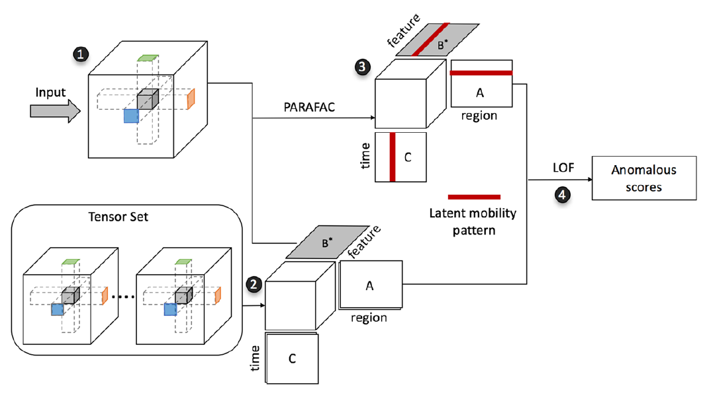

Anomaly detection in spatiotemporal data via regularized non-negative tensor analysis
Chaoguang Lin, Qiuhan Zhu, Shunan Guo, Zhuochen Jin, Yu-Ru Lin, Nan CaoData Mining and Knowledge Discovery 2018
pdf |